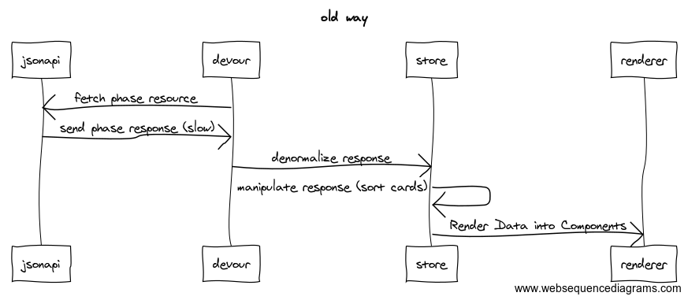

Project Aareal Bank
- Deal
- Phases
- Cards
- CardAttachments
- …
Problems
- one main request has a big payload
- very slow TTFB
- hard to update specific Entity
How did it worked before

Pros
- easier to update one specific entity
- caching built in
- Actions and Mutations uniform -> can be autogenerated in the future
- getters can be very performant (caching)
Cons
- more boilerplate, harder to start project
- higher memory consumption
- entities need to be invalidated
Learnings
- keep more attention to balazs 'new hot stuff'
- normalization has no performance penalties if used appropriately
- use getters in a way that it's cached (don't use currying functions)